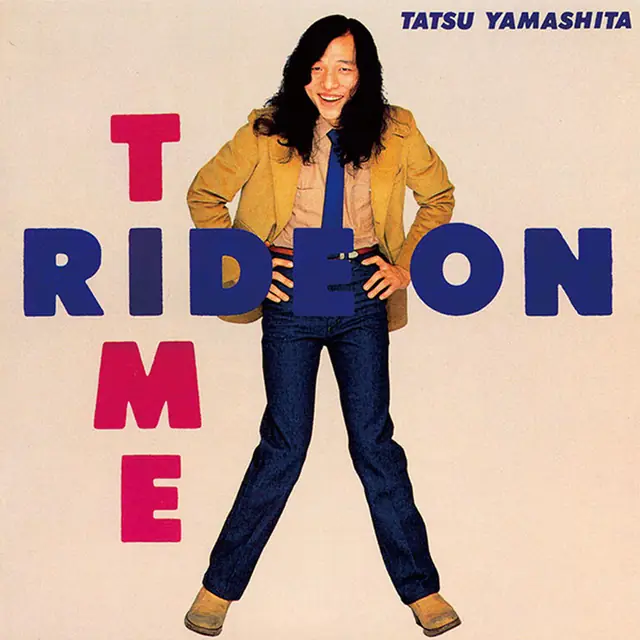
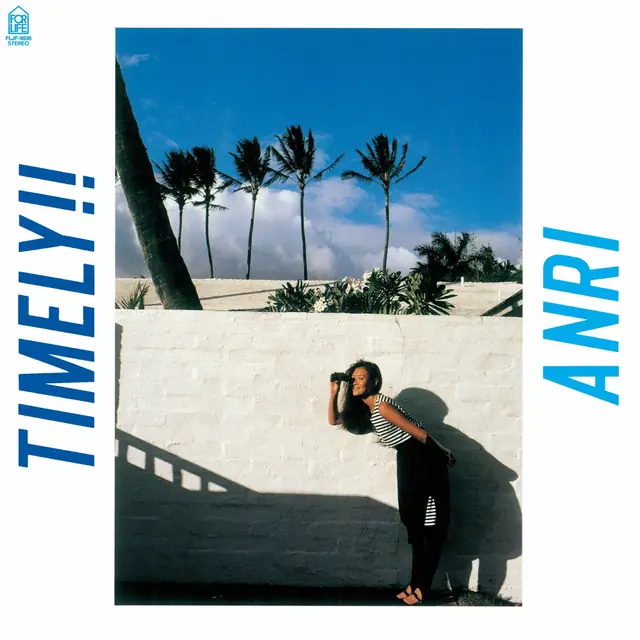

MA間
Ma — deixar espaço
Nem toda área precisa ser preenchida. O vazio ajuda a separar ideias.
Japão · décadas de 1970 e 1980
Um ponto de partida para ouvir city pop sem reduzir tudo a neon, nostalgia e palmeiras.
01
Antes de apertar play
O rótulo juntou, com o tempo, uma parte do pop urbano japonês gravado sobretudo entre o fim dos anos 1970 e os anos 1980.
Há funk, boogie, disco, jazz fusion, R&B, soft rock e AOR. Alguns discos são feitos para a pista; outros parecem tocar melhor dentro de um carro, num café ou em casa, tarde da noite.
Esta página segue o lado mais rítmico: baixo com personalidade, bateria bem encaixada, guitarra limpa e arranjos de estúdio que continuam revelando detalhes depois de várias audições.
MA間
Nem toda área precisa ser preenchida. O vazio ajuda a separar ideias.
SHIBUI渋い
Cor e movimento aparecem quando têm uma função, não para disputar atenção.
ASYMMETRY非対称
Os blocos não são espelhados, mas mantêm ritmo e proporção.
02
A imagem que veio junto
Quando o city pop voltou a circular pela internet, luzes ciano e magenta viraram uma maneira rápida de dizer “cidade japonesa à noite”. O código funciona porque lembra placas, vitrines, bares, estações e reflexos no asfalto.
Só que os discos também falam de manhã, praia, chuva, trabalho, solidão e vida doméstica. Por isso o neon desta página fica nas bordas: aparece mais no modo noturno, mas não toma o lugar do texto nem das capas.
03
Uma forma simples de ouvir
Tente acompanhar apenas as notas graves. Elas costumam carregar boa parte do movimento da música.
A bateria firma o pulso. A guitarra entra curta e limpa, quase como mais uma peça da percussão.
Teclas, metais, coros e efeitos dão temperatura ao arranjo. É aí que uma faixa ensolarada pode esconder certa melancolia.
04
Três boas portas de entrada
Não é um pódio. A escolha serve para mostrar produção, composição e groove por ângulos diferentes.

ARTISTA 01
山下 達郎
Voz, composição, arranjos e obsessão por estúdio
Tatsuro veio do Sugar Babe e nunca tratou o estúdio como simples acabamento. Vozes empilhadas, baixo seco e guitarras precisas fazem músicas muito trabalhadas parecerem naturais. “Ride on Time” marca sua virada popular; “For You” concentra a fase mais luminosa.
Trivia
O álbum “Ride on Time” foi feito após a explosão do single homônimo. Em 2023, “For You” voltou ao Top 10 japonês 40 anos e 11 meses depois de sua primeira entrada.
Discos de referência
ARTISTA 02
竹内 まりや
Composição pop com atenção à vida comum
Mariya escreve sobre casamento, despedida, espera e rotina sem transformar tudo em grande drama. Em “Variety”, pela primeira vez, um álbum inteiro traz letras e melodias dela, com produção de Tatsuro Yamashita. “Plastic Love” ficou enorme depois, mas o disco funciona melhor quando ouvido inteiro.
Trivia
“Variety” saiu em 25 de abril de 1984. “Plastic Love” já estava ali como a segunda faixa; os mixes de 12 polegadas vieram no single lançado no ano seguinte.
Discos de referência

ARTISTA 03
杏里
Verão, boogie e refrões que chegam rápido
Anri é uma entrada direta para o lado mais dançante do city pop. Em “Timely!!”, melodias abertas e vocais limpos encontram baixo, bateria e sintetizadores de pista. A produção de Toshiki Kadomatsu mantém o disco leve sem deixá-lo simples.
Trivia
A edição original de 1983 tinha dez faixas. “Remember Summer Days”, hoje uma das músicas mais conhecidas dessa fase, foi acrescentada às edições posteriores em CD.
Discos de referência
As capas aparecem em baixa resolução para comentário editorial. Os direitos pertencem aos respectivos artistas, selos e criadores.
05
Uma primeira noite de escuta
Ainda há sol
Luzes acesas
Cidade quase vazia
夜の街を聴くEscutar a cidade à noite
Para continuar
Quanto mais você escuta, menos o city pop parece uma estética pronta e mais ele soa como um catálogo cheio de diferenças.